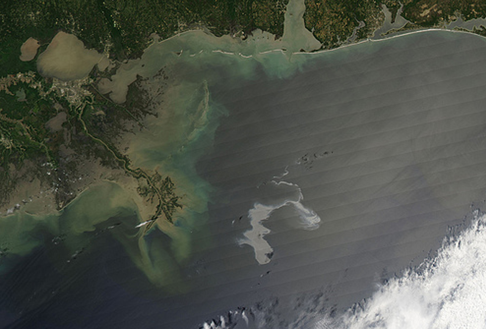
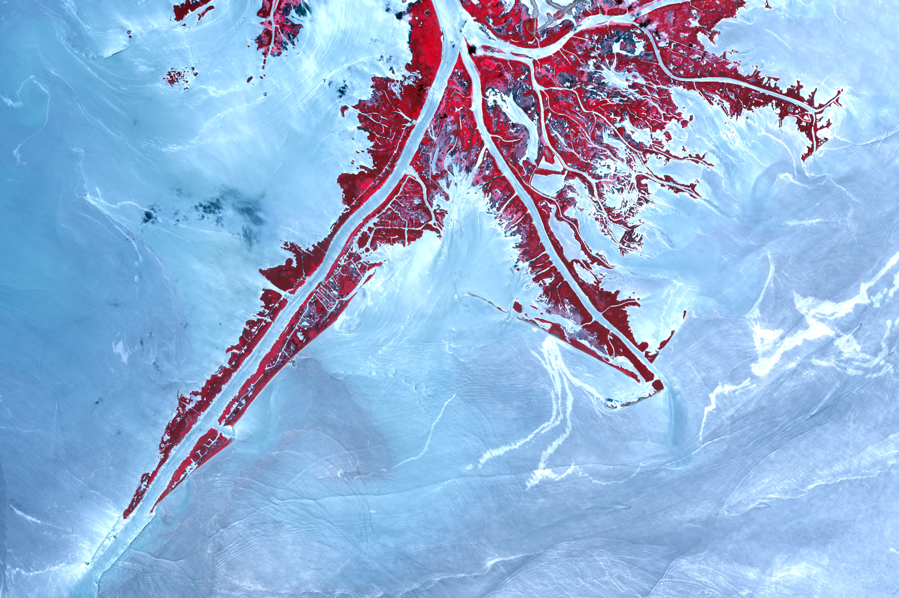
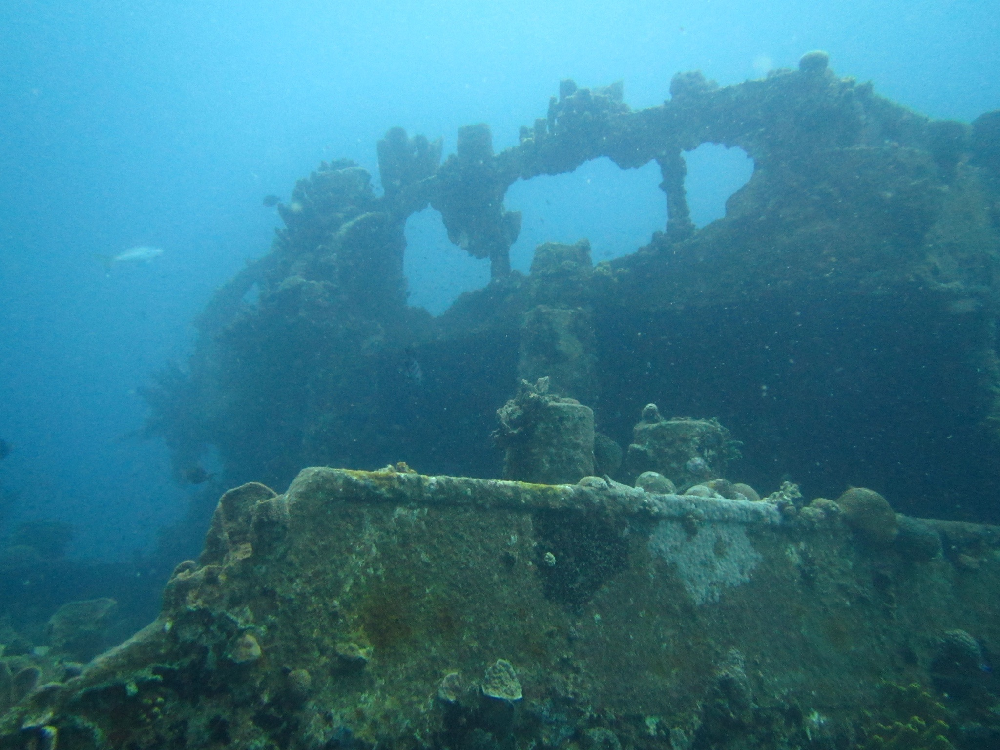

An Interactive Oceanic Experience
In this project, I intend to make an interactive photo journey with a narrative about our connection to the ocean. I want to use the juxtaposition of images, gifs, and words to help draw new correlations between humans, technology, and nature.
Examples of Projects:
SOMEWHERE
Indirect Flights Interactive Collage
Larry Carlson's Northvale - A Photographic Trip
"The sea, the great unifier, is man's only hope. Now, as never before, the old phrase has a literal meaning: we are all in the same boat."
- Jacques Cousteau
- 
- 


- 